0. How to read this report
The Phase-2 pipeline trained four models on a small FaceForensics++ c23 subset, then tested each once on three sets:
- FF++ c23 test — same family as training (in-domain)
- c40-style (simulated) — same test videos, heavily re-compressed
- SDFVD — different source (Pexels real + Remaker face-swaps), no Phase-2 retraining
Every number and plot below comes from that run (and the Grad-CAM script). Nothing is invented for the report.
P(fake) between 0 and 1.
A score ≥ 0.5 is counted as “fake” for accuracy / precision / recall / F1.
AUC uses the continuous scores (ranking quality), so it can look OK even when the 0.5 threshold looks bad.
1. What each model variant is
| Name in plots | What it uses | Params |
|---|---|---|
| spatial-only (baseline) | EfficientNet-B0 on face crops; mean-pool 10 frames | 4.34M |
| spatial+frequency | Above + small CNN on FFT magnitude map | 4.46M |
| spatial+temporal | Spatial features through a Bi-LSTM over 10 frames | 7.29M |
| full hybrid | Spatial + frequency, then Bi-LSTM | 7.64M |
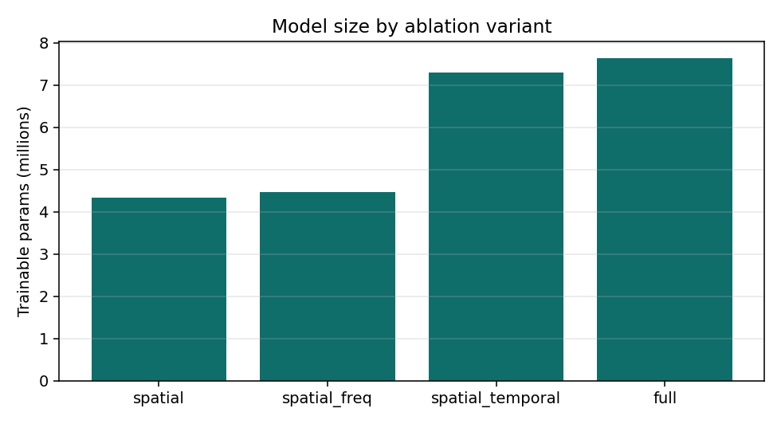
Bigger is not automatically better on a 40-video training subset — the baseline often won in-domain.
2. Data: what went into training and testing
Sample frame from the FF++ mirror (inspect step)
This is one raw frame saved during data_prep --step inspect. Size was 640×480, so the pipeline treated inputs as full frames and ran MTCNN to crop the face to 224×224 (no landmark alignment).
| Split / set | What it contains (this run) |
|---|---|
| FF++ after balance | 20 real + 20 fake videos (5 per Deepfakes / Face2Face / FaceSwap / NeuralTextures) |
| Sequences | train 148 · val 30 · test 30 (10 frames each, stride 10) |
| FF++ / c40 test videos | 6 videos only → 5 real, 1 fake (important for F1=0 explanations below) |
| SDFVD | 106 videos, 176 sequences, balanced 53/53 |
3. Headline result chart — video AUC
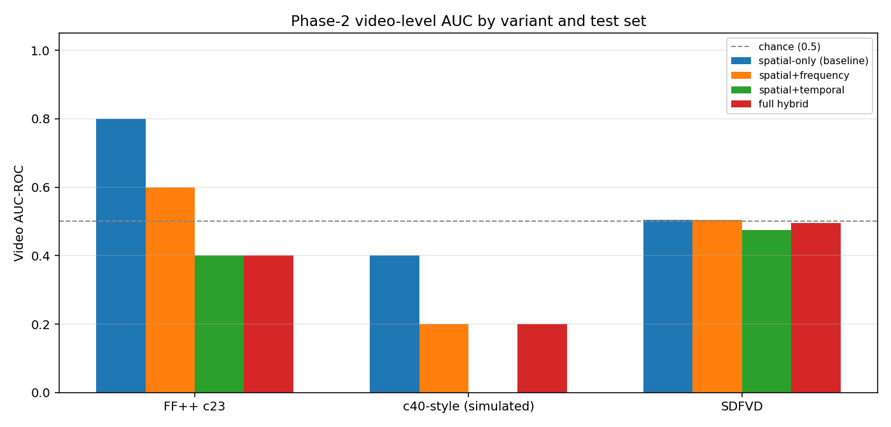
How to read this chart
- Each group of bars is one test set.
- Each colored bar is one model variant.
- Height = video-level AUC-ROC (1.0 perfect ranking, 0.5 random, <0.5 worse than chance).
- The dashed line at 0.5 is the “guess randomly” baseline.
What the chart says in plain words
- FF++ c23 (left group): spatial-only is best (0.80). Adding frequency/LSTM did not help on this tiny test set.
- c40-style (middle): every bar drops. Heavy compression destroys many forensic texture/spectrum cues.
- SDFVD (right): all bars hug ~0.50. Phase-2 models trained only on FF++ did not transfer to Remaker/Pexels clips.
| Variant | FF++ c23 AUC | c40-style AUC | SDFVD AUC | One-line interpretation |
|---|---|---|---|---|
| spatial-only | 0.8000 | 0.4000 | 0.5041 | Best in-domain; fails under compression & cross-dataset |
| spatial+frequency | 0.6000 | 0.2000 | 0.5039 | FFT branch did not beat baseline here |
| spatial+temporal | 0.4000 | 0.0000 | 0.4745 | LSTM overfit / under-trained on small data |
| full hybrid | 0.4000 | 0.2000 | 0.4950 | Most capacity, weakest transfer in this run |
Later, for the web demo only, the spatial checkpoint was fine-tuned on SDFVD (val AUC ≈ 0.98). That demo model is separate from the Phase-2 ablation table above.
4. Full metrics table — what each column means
- n — number of videos (video level) or sequences (sequence level).
- AUC-ROC — can we rank fakes above reals using the score? Threshold-free.
- Accuracy — fraction of correct hard decisions at threshold 0.5 (video = majority vote of sequences).
- Precision — of videos called fake, how many really were fake?
- Recall — of true fakes, how many did we catch?
- F1 — harmonic mean of precision and recall for the fake class.
Video level (main official table)
| Variant | Test | n | AUC | Acc | Prec | Rec | F1 | Explain |
|---|---|---|---|---|---|---|---|---|
| spatial | FF++ c23 | 6 | 0.80 | 0.67 | 0 | 0 | 0 | Ranks well (AUC 0.8) but the single fake video was not voted fake at 0.5 → F1=0 |
| spatial | c40 | 6 | 0.40 | 0.50 | 0 | 0 | 0 | Worse than chance ranking after compression |
| spatial | SDFVD | 106 | 0.50 | 0.50 | 0.50 | 0.92 | 0.65 | Almost random AUC; high recall = labels almost everything fake |
| spatial_freq | FF++ c23 | 6 | 0.60 | 0.67 | 0 | 0 | 0 | Weaker than spatial baseline |
| spatial_freq | c40 | 6 | 0.20 | 0.50 | 0 | 0 | 0 | Compression hurts frequency cues hard |
| spatial_freq | SDFVD | 106 | 0.50 | 0.51 | 0.51 | 0.81 | 0.62 | Still ~chance on cross-dataset |
| spatial_temporal | FF++ c23 | 6 | 0.40 | 0.33 | 0 | 0 | 0 | LSTM did not help with so little data |
| spatial_temporal | c40 | 6 | 0.00 | 0.33 | 0 | 0 | 0 | AUC 0 = rankings inverted vs labels |
| spatial_temporal | SDFVD | 106 | 0.47 | 0.49 | 0.49 | 0.85 | 0.63 | Slightly below chance |
| full | FF++ c23 | 6 | 0.40 | 0.50 | 0 | 0 | 0 | Full hybrid underperformed baseline here |
| full | c40 | 6 | 0.20 | 0.50 | 0 | 0 | 0 | No compression robustness gained |
| full | SDFVD | 106 | 0.50 | 0.47 | 0.48 | 0.87 | 0.62 | Near chance; biased toward predicting fake |
5. ROC curves — explained from scratch, then every plot
5.1 What is an ROC curve?
- The model gives every video a score
P(fake). - Imagine sliding the decision threshold from 1 → 0.
- For each threshold, plot:
- True positive rate (y) = fraction of real fakes caught
- False positive rate (x) = fraction of reals wrongly called fake
- The curve traces that trade-off. The AUC is the area under it.
- Diagonal dashed line = random guessing (AUC 0.5).
- A curve that hugs the top-left is good. A curve under the diagonal is worse than chance.
With only 6 videos, ROC curves look like stairs (few possible score orderings). That is normal, not a plotting bug.
5.2 Spatial-only — ROC (video)
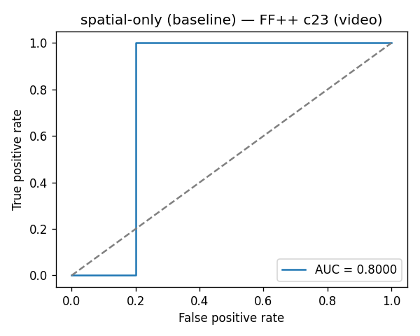
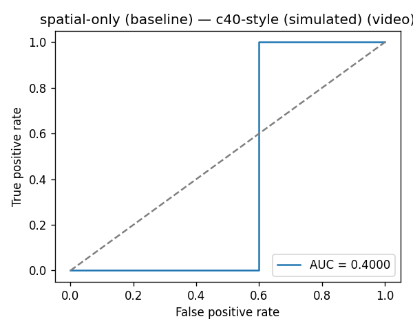
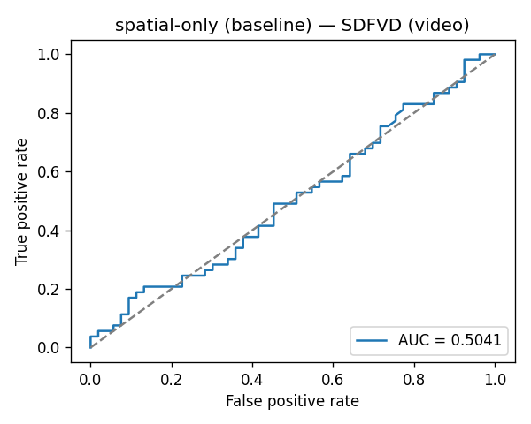
5.3 Spatial + frequency — ROC (video)
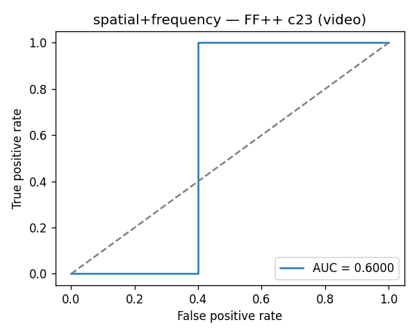
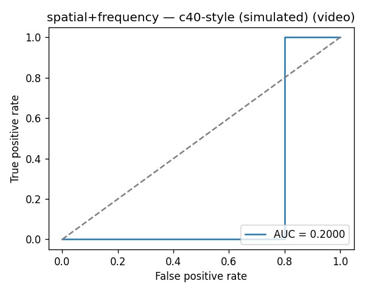
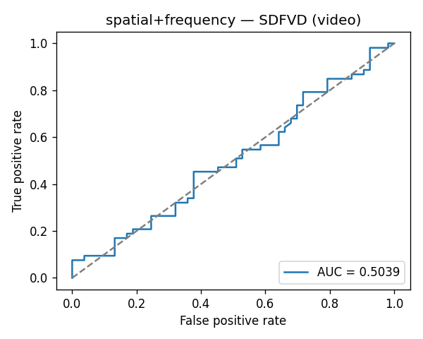
5.4 Spatial + temporal — ROC (video)
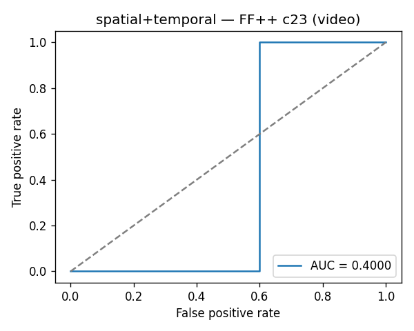
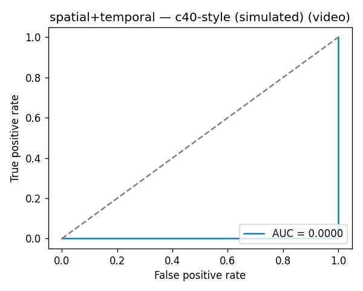
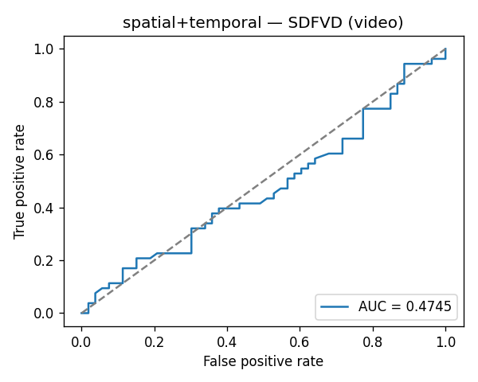
5.5 Full hybrid — ROC (video)
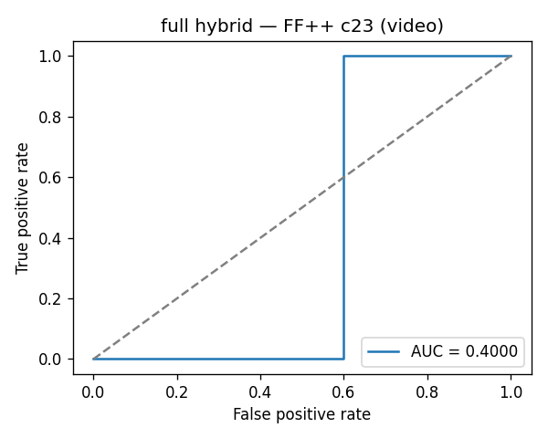
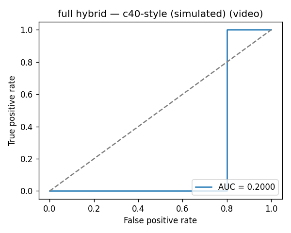
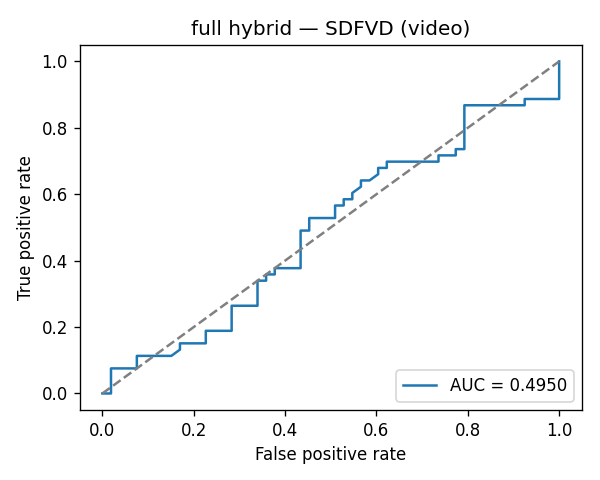
6. Confusion matrices — explained from scratch, then every plot
6.1 What is a confusion matrix?
After applying threshold 0.5 (and majority vote for videos), each video gets a hard label: predicted real or fake. The matrix counts:
| Predicted real | Predicted fake | |
|---|---|---|
| Actual real | True real (correct) | False fake (false alarm) |
| Actual fake | Missed fake | True fake (caught) |
Darker cells = higher counts. With 6 FF++ test videos you will often see numbers like 4, 1, 1, 0.
6.2 Spatial-only — confusion (video)
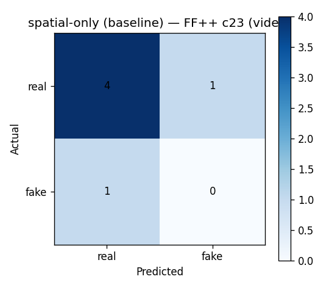
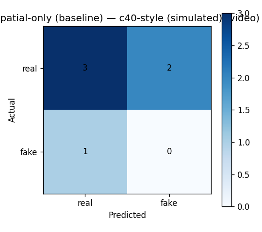
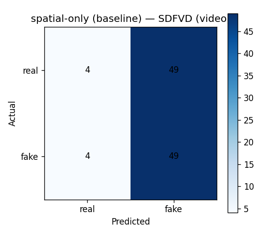
6.3 Spatial + frequency — confusion (video)
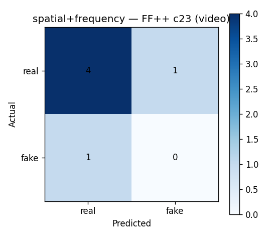
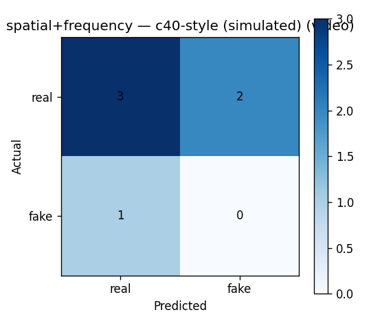
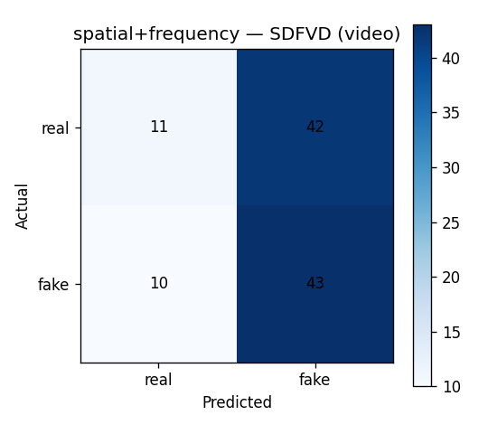
6.4 Spatial + temporal — confusion (video)
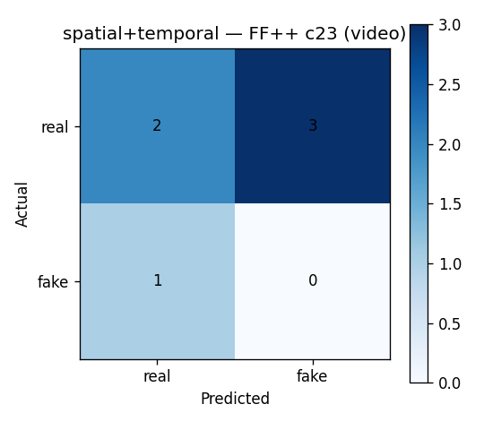
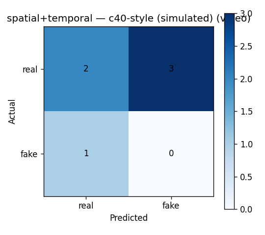
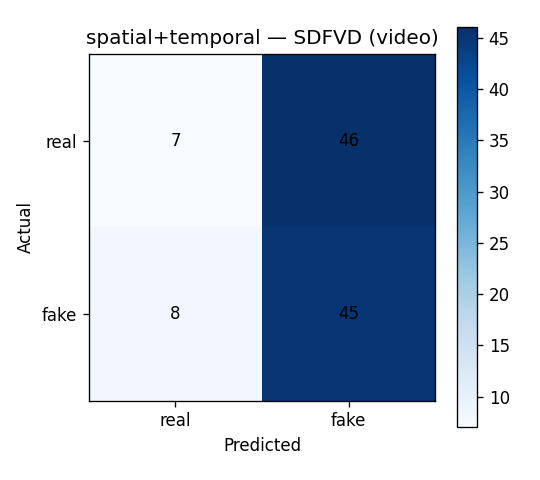
6.5 Full hybrid — confusion (video)
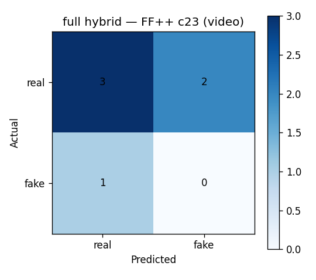
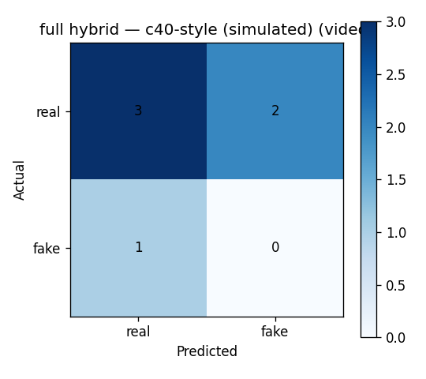
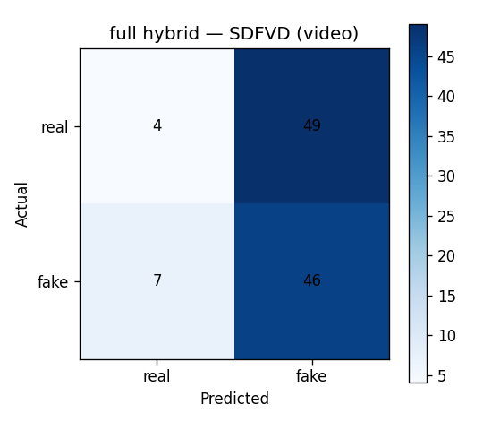
7. Grad-CAM — from scratch, then every image
7.1 What Grad-CAM is (beginner → project-specific)
- Problem: a CNN outputs a number (here P(fake)), but we cannot see why.
- Idea: look at the last spatial convolution layer of EfficientNet (
conv_head). That layer still has a 2D map over the face. - Gradients: compute how much each map location would change P(fake) if it got stronger.
- Weights: average those gradients → importance of each channel.
- Heatmap: weighted sum of activation maps → upsample to 224×224 → overlay on the face crop.
- Colors (jet map in our plots):
- Red / orange = high contribution toward the fake score
- Yellow / green = medium
- Blue / purple = low contribution
In this project, Grad-CAM was run with the full hybrid checkpoint. The LSTM is put in train mode only so cuDNN allows backward; the LSTM has no dropout, so outputs stay the same.
7.2 How each overlay was chosen
- Up to 2 real + remaining fakes from FF++ c23 test and SDFVD (manifest order, one frame per video).
- Middle frame of the sequence.
- Saved under
results/gradcam/withindex.jsonstoring P(fake) for that frame.
7.3 Image-by-image explanation
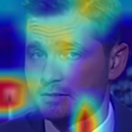
Ground truth: authentic FF++ original video.
Model P(fake): 0.387 → below 0.5, so the frame scores as real.
What you see: strongest red on the lower cheek / jaw–collar region; yellow on forehead; mostly blue elsewhere; a small hot spot in the background left.
How to interpret: for this real face, the network’s fake-score explanation is not tightly locked on classic “eye–nose–mouth” forensics; some attention leaks to clothing boundary / background. Because P(fake) is still low, those regions did not push the score over the fake threshold.
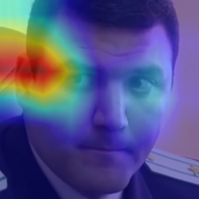
Ground truth: authentic.
Model P(fake): 0.555 → slightly above 0.5 (false-leaning on this single frame).
What this teaches: even real frames can cross the threshold. Grad-CAM for this case shows where the spatial net looked while producing that mildly elevated fake score — useful for debugging threshold / domain issues, not for accusing the person.
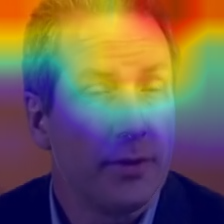
Ground truth: Face2Face manipulation (expression transfer style forgery).
Model P(fake): 0.419 → below 0.5 on this frame (miss at frame level).
Heatmap: hottest band across the forehead / hairline; eyes–mouth stay cooler (blue/purple).
Interpretation: the spatial branch’s explanation for “fake” here emphasizes upper-head texture rather than the mouth (where Face2Face often operates). Combined with P(fake)<0.5, this matches the quantitative story: the Phase-2 full model was not reliably catching this test fake at threshold 0.5.
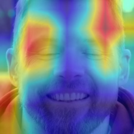
Ground truth: real Pexels clip (SDFVD).
Model P(fake): 0.687 → incorrectly high (cross-dataset false alarm on this frame).
Why it matters: this is a concrete picture of domain shift — a real web-style video gets a “fake-looking” score from an FF++-trained net. Grad-CAM shows which face regions drove that mistaken elevation of P(fake).
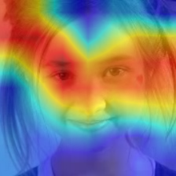
Ground truth: real.
Model P(fake): 0.657 → again falsely high.
Same lesson as v1: before prototype fine-tuning, SDFVD reals were often scored like fakes. That is why Phase-2 SDFVD AUC sat near 0.5 and why we later fine-tuned for the web demo.
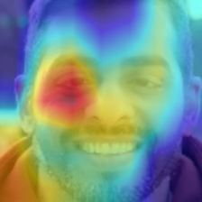
Ground truth: Remaker AI face-swap deepfake.
Model P(fake): 0.686.
Heatmap: intense red over the eye region (especially one eye), cooler on beard/background.
Interpretation: for this swap, the spatial net’s fake explanation focuses on periocular appearance — a common place face-swaps leave blending / identity artifacts. Score > 0.5 agrees with the fake label on this frame, but remember AUC on the whole SDFVD set was still ~0.5, so success on single frames does not equal dataset-wide separation.
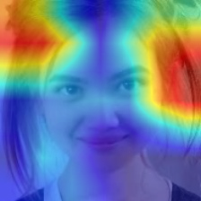
Ground truth: fake.
Model P(fake): 0.545 → just above threshold.
Borderline score: the model is only weakly confident. Grad-CAM still shows which face areas contributed to tipping P(fake) slightly over 0.5. Useful viva line: “threshold decisions can be fragile even when the label is correct.”
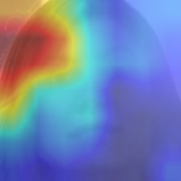
Ground truth: fake.
Model P(fake): 0.591.
Another swapped identity where the explanation heatmap localizes on facial interior regions rather than the whole frame. Together with images 6–7, this shows Grad-CAM outputs for known fakes in the cross-dataset set.
7.4 Grad-CAM summary table
| # | File | True label | P(fake) | Frame decision @0.5 | Main visual takeaway |
|---|---|---|---|---|---|
| 1 | original/004 | real | 0.387 | real ✓ | Jaw/collar + forehead focus; low fake score |
| 2 | original/901 | real | 0.555 | fake ✗ | Real frame false-alarm at threshold |
| 3 | Face2Face/843_859 | fake | 0.419 | real ✗ | Forehead band; missed fake on this frame |
| 4 | SDFVD v1 | real | 0.687 | fake ✗ | Domain-shift false alarm |
| 5 | SDFVD v10 | real | 0.657 | fake ✗ | Same cross-dataset issue |
| 6 | SDFVD vs1 | fake | 0.686 | fake ✓ | Strong eye-region explanation |
| 7 | SDFVD vs10 | fake | 0.545 | fake ✓ | Barely over threshold |
| 8 | SDFVD vs11 | fake | 0.591 | fake ✓ | Interior-face focus on a swap |
8. Overall conclusions (for viva / report ending)
- Pipeline works end-to-end: data prep, four ablations, metrics, ROC/CM plots, Grad-CAM, and a web prototype.
- With a small FF++ subset, spatial-only was the strongest in-domain model (video AUC 0.80 on FF++ c23).
- Compression (c40-style) and cross-dataset (SDFVD) expose failure: AUCs fall to ≤0.4 or ~0.5.
- F1=0 on tiny FF++/c40 tests is explained by class imbalance (1 fake video), not by “AUC lying.”
- Grad-CAM makes mistakes and successes visible at the face-region level; it supports discussion, not forensic certainty.
- Demo fix: SDFVD fine-tune of the spatial model (val AUC ≈ 0.98) is what FrameForge uses for uploads — separate from the Phase-2 ablation numbers.
Print tip: open this file in Chrome/Edge → Ctrl+P → Save as PDF for submission.